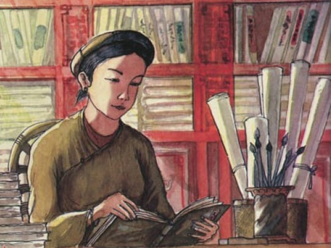

Theo Dư địa chí Thừa Thiên Huế, bà Huyện Thanh Quan (1805-1848) tên thật là Ngô Thị Hinh (một số các tài liệu ghi là Nguyễn Thị Hinh), quê làng Nghi Tàm, huyện Từ Liêm nay thuộc phường Quảng An, quận Tây Hồ, Hà Nội. Bà là vợ của Ông Lưu Nghị, đỗ cử nhân năm 1821 (Minh Mạng thứ 2), từng làm tri huyện Thanh Quan (nay là huyện Thái Thụy, tỉnh Thái Bình), nên người ta thường gọi bà là Bà Huyện Thanh Quan.

.Bà huyện Thanh Quan rất say mê văn chương thi phú, nhất là thể loại thơ Đường luật. Năm 1839, nhờ có tài thi văn lỗi lạc, nên Bà được vua Minh Mạng triệu vào cung phong chức Cung trung Giáo tập để dạy học cho các công chúa và cung nữ. Theo nhiều tư liệu ghi chú là bà mất năm 1848 ở tuổi 43..
Trong thời gian làm Cung trung Giáo tập dưới thời Vua Tự Đức, do nhà vua vốn là người thích làm thơ nên thường cùng với bà họa thơ, bà họa rất tài nên được nhà vua vô cùng quý trọng. Cũng cần phải nói thêm rằng, hoạ thơ là một thú vui của các bậc thi nhân ngày xưa. Tuy ngày xưa cũng có nhiều thể thơ, nhưng đa số các thi nhân chỉ chọn thơ Đường Luật để xướng hoạ (có nghĩa đối đáp).
Về những tác phẩm bằng chữ Nôm của Bà huyện Thanh Quan, hiện nay chỉ còn lại những bài thơ thất ngôn nổi tiếng như: Thăng Long hoài cổ, Chùa Trấn Bắc, Đền Trấn Võ, Qua đèo Ngang, Cảnh thu, Nhớ nhà, Cảnh chiều hôm,…
Một trong những bài thơ của Bà Huyện Thanh Quan tôi đã học qua thời trung học và nhớ mãi cho đến tận bây giờ, đó là bài thơ Đèo Ngang, được viết theo thể thất ngôn bát cú Đường luật, luật trắc vần bằng. Đây cũng có lẽ là một trong bài thơ tả cảnh đặc sắc và ưa thích nhất của tôi. Chúng ta hãy cùng đọc lại và phân tích sơ nét về bài thơ trên của Bà.
“Bước tới đèo ngang bóng xế tà
Cỏ cây chen đá lá chen hoa"
Ngay từ câu mở đầu của bài thơ, Bà Huyện Thanh Quan đã cho chúng ta thấy được khoảng thời gian Bà đi đến Đèo Ngang: vào cuối buổi chiều, lúc "bóng xế tà". Đó là, thời khắc của hoàng hôn, ban ngày sắp sửa tắt và màn đêm đang dần buông xuống. Cái hay của Bà là dùng từ "tà" để diễn đạt nên khung cảnh buồn bã của một vùng đèo núi xa xôi lúc hoàng hôn.
Trong câu thơ thứ hai, Bà đã chỉ cho chúng ta thấy rõ hơn cận cảnh của đèo như: cây, cỏ, đá, và hoa. Điều thú vị ở đây, chính là cách sử dụng từ khéo léo của bà như từ "chen" nằm ở hai vế, hay các từ "đá", "lá" của câu thơ; cộng vào đó, bà còn tô điểm thêm bức tranh Đèo Ngang của buổi chiều tà bằng những đóa hoa rừng thiên nhiên đầy nét hoang dã của chốn núi rừng.
"Lom khom dưới núi tiều vài chú
Lác đác bên sông chợ mấy nhà"
Qua hai câu thơ thứ 3 và 4, chúng ta có thể thấy được sự tinh tế của bà trong việc dùng những cặp từ "lom khom", "lác đác"; hoặc những từ chỉ về số lượng như " vài chú" "mấy nhà". Bà muốn diễn tả quang cảnh sống tịch mịch đìu hiu của chốn Đèo Ngang, nơi cũng có người nhưng chỉ đếm được " tiều vài chú", hay cũng có chợ và nhà nhưng chỉ lác đác " chợ mấy nhà" mà thôi. Điều này nói lên cảnh sống ở Đèo Ngang lúc bấy giờ rất là hoang sơ và dân tình thưa thớt.
"Nhớ nước đau lòng con quốc quốc
Thương nhà mỏi miệng cái gia gia"
Ở trong hai câu thơ 5 và 6, Bà Huyện Thanh Quan đã bộc lộ cảm xúc " nhớ nước" khi nghe tiếng cuốc kêu, cũng như nỗi " thương nhà " khi nghe tiếng chim da da (đa đa) kêu. Điều đó như muốn nói lên sự hoài cổ, luyến tiếc về một triều đại cũ (triều Lê) của bà. Thế nhưng, đã có một sự đồng âm ở đây trong việc dùng những từ để ám chỉ giữa cụm từ "con quốc quốc" (quốc có nghĩa là nước còn cuốc là chim) và "cái gia gia" ( gia là nhà, là gia đình, còn da da là chim). Phải công nhận rằng, Bà quá đỗi tài tình trong phần đối và nghệ thuật đảo ngữ ở hai câu thơ trên. Đây cũng là nét đặc trưng cho phong cách sáng tác những tuyệt tác về thơ phú "rất riêng" của bà.
"Dừng chân đứng lại: trời, non, nước
Một mảnh tình riêng ta với ta."
Phân tích ý nghĩa hai câu cuối, chúng ta có thể nhận thấy được cách chuyển đổi từ các yếu tố tập hợp của một quần thể thiên nhiên rộng lớn bao gồm "trời, non, nước" ; bỗng chốc trở thành một yếu tố đơn lẻ, một mình của con người "ta với ta".
Cũng qua hai câu kết này, Bà Huyện Thanh Quan dường như biểu cảm tâm trạng cô đơn, trống vắng, với "một mảnh tình riêng" của mình mà không tìm được người san sẻ duy chỉ có " ta với ta", khi " dừng chân đứng lại" để ngắm nhìn khung cảnh thiên nhiên với “trời, non, nước” của Đèo Ngang trong buổi chiều tà.
Đúc kết lại, bài thơ Đèo Ngang đã cho chúng ta thấy được tài năng làm thơ theo thể thất ngôn bát cú Đường luật của Bà Huyện Thanh Quan. Nghệ thuật khéo léo trong việc sử dụng các từ ngữ, về đối, về đảo ngữ, cách sắp xếp và chuyển đổi tài tình giữa các từ, các câu với nhau; hay tính truyền cảm giữa cánh và tình, giữa thiên nhiên với con người, chính là những yếu tố đặc trưng góp phần tạo nên những nét đặc sắc và hấp dẫn của bài thơ này.
Ngoài ra, Đèo Ngang còn chứa đựng nỗi niềm thương nhớ về quê hương, về gia đình của nữ sĩ trên bước đường đến kinh thành Phú Xuân ( Huế) để nhậm chức Cung trung Giáo tập của triều đình nhà Nguyễn.
Vĩnh Anh ( sưu tầm và biên soạn)